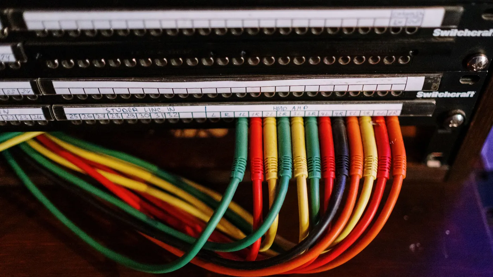

Microsoft's new security agents work because Microsoft owns the ground underneath them. Almost nobody runs one vendor, which decides who is left doing the joining.
Microsoft shipped a batch of security tooling, and Dell'Oro Group's read of it is more useful than the launch was. Their piece on whether agentic security stays open gets at something that applies well beyond security.
The new pieces are agentic: a layer that coordinates security context and the agents acting on it, vulnerability discovery wired into developer workflows, a model tuned for security work, and a lab that finds and fixes flaws on its own. They work for one reason. Microsoft already owns the ground underneath them. Defender for what happens on the endpoint, Entra for identity, Azure for enforcement, GitHub for the code. The agent never has to go looking for context. It shows up assembled, with permissions already attached.
The caveat in the analysis is the part to keep. Almost no large business runs a single vendor. An agent whose reasoning stops at one estate is reasoning about a slice, and the slice is not the incident. Microsoft says it is working on third-party data federation. Whether that arrives in a usable form is still open. Palo Alto Networks, CrowdStrike and Google are building the same thing from their own corners, with the same limit.
Set the security framing aside, because this is the shape of nearly every agent you will be sold in the next two years.
Your customer record lives in a CRM. Billing sits somewhere else. Order history is in a third system, and the last four conversations are in a helpdesk that talks to none of them. Each of those vendors is going to ship an agent. Each one will read its own data very well and be blind to the rest.
The work that actually costs you is the joining. When something escalates, a person opens four tabs and reconstructs what happened before they can decide anything. That is the slow part and the expensive part, and it is exactly the part a single-vendor agent leaves untouched. You get a faster answer to a question you could already answer, and no help with the one you could not.
Reading across your systems is not a feature you bolt on later. It is settled the day you decide where the agent runs.
CX-Builder runs on your own infrastructure and reaches out to whatever you already have. It is not a tenant in one vendor's estate peering over the fence at the others. It sits above all of them, because you own the place it runs. Connectors into the systems you already pay for. Retrieval over your own material: runbooks, policies, closed cases, the notes explaining why you did it that way last time. A human gate in front of anything that acts.
That gate matters more as these agents get more capable. The launch that started this includes autonomous remediation, which is a polite way of saying the software changes things without asking first. For a low-stakes class of work that is the right call. One step up, it is not. Where the line sits should be your decision rather than a vendor default you inherited.

One flow that pulls from each system's API and normalises the results into a single shape before the model sees any of it. A vector store over your runbooks and closed cases, so the agent reasons against your own history instead of a generic notion of how these things usually go. Then a condition on confidence and impact: routine cases finish and get logged, anything above the line stops at an approval node with the evidence already gathered.
The model underneath stays something you choose, and can change later, because nothing above it is welded to one vendor.
Take your most common escalation and count the systems somebody has to open to resolve it. If the number is greater than one, no agent shipped inside a single one of those systems will finish the job. Decide this quarter whether that joining work stays with a person, or moves into something you own.